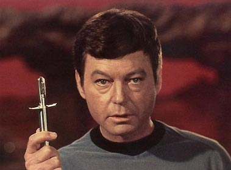
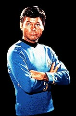
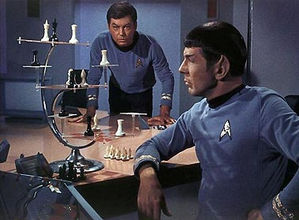
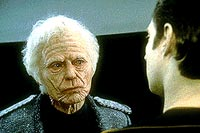

|
por
Lia Matos Viegas

Pois , Jim. Dia 11 de junho fez
dois anos. Dois anos sem ele, que tanto nos emocionou
interpretando o grande doutor McCoy. triste pensar nele
morto... ele, que fez das nossas vidas to mais felizes quando
brigava com o Spock, quando discordava de Kirk.
A carreira dele comeou simples, no ? Foi-se para a Califrnia
onde, descoberto pela Paramount, foi encantando outros, muitos
outros antes de ns. Mas imagina! Ele era para ser o Spock,
coitado! No, ele no merecia essa funo. Ou merecia? Talvez
hoje lembrassem mais dele... mas ele to bem lembrado! E foi
sendo o doutor da Enterprise que ele realizou o grande sonho de
ser mdico, no foi?
 E
que mdico... no acredito que haja personagem mais carismtico
que o dele em todas as sries de Jornada nas Estrelas. No
sei por qu. Talvez fossem os seus olhos azuis, talvez o amor
mostrado enquanto trabalhava. Ou ser que era a amizade que ele
tinha com aqueles que o rodeavam (na frente e atrs das cmeras)?
Fico imaginando como ficou a mente dele quando se viu obrigado a
guardar o katra do Vulcano, preso como louco, solto por seus
amigos... t, para ajudar Spock, mas no deixou de ser para ajud-lo
tambm. Alis, por que ele foi acusado de seqestro da
Enterprise seguida da destruio da mesma sendo que ele mesmo
foi seqestrado? Alm disso, estava sendo considerado louco, e
loucos no tm domnio sobre suas aes! Spock no foi
acusado, foi? E foi o culpado de tudo! Mas talvez ele no abrisse
mo dessa acusao, caso lhe tivessem dado a opo... ou ser
que me engano?
E quem no se emocionou na cena em que o doutor se v obrigado a
matar o pai para faz-lo parar de sofrer? Sim, em "Jornada
nas Estrelas V"... talvez o filme no seja dos melhores
(mas dizer que o pior eu acho que j demais, mas gosto no
se discute), mas a cena maravilhosa. E, pergunto, na posio
dele, quem no teria feito o mesmo? Difcil deciso, no? Mas
que ele tomou...
Porque eu gosto mais do personagem dele do que de qualquer outro,
eu no sei. Talvez nunca venha a saber. Dizem que porque eu no
gosto do Spock, e talvez tenha seja verdade. Mas no s
isso... isso eu posso garantir.

O que eu faria se eu o encontrasse? Talvez eu comeasse tentando
manter a concentrao. H quem diga que eu comearia
desmaiando, mas eu no acredito nisso: meu conciente no me
deixaria inconsciente nem sonhando. Se eu pudesse o convidaria
para jantar (nada romntico, mesmo porque ele era casado, mas
algo entre amigos, pois seria assim que eu queria que ele me
visse: como uma amiga!), perguntaria coisas que eu gostaria de
saber sobre ele, como qual o maior legado que ele espera ter
deixado em vida, sei l, eu nunca o encontrei para saber!
 Existem
momentos em que a gente s sabe o que vai fazer quando acontecem.
Esses seriam os momentos com o querido DeForest Kelley. Se o
encontrasse, deixaria claro, acima de tudo, que nunca iria esquec-lo.
E por isso, Jim, que ele nunca estar morto: porque a memria
dele estar presente entre ns eternamente. Valeu, De!
|